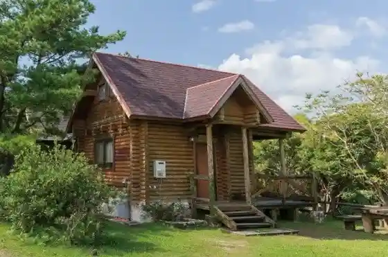
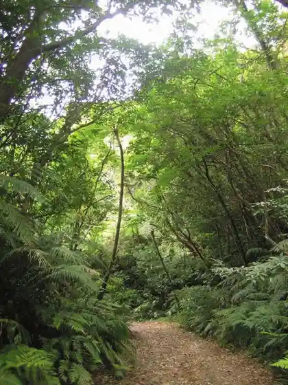
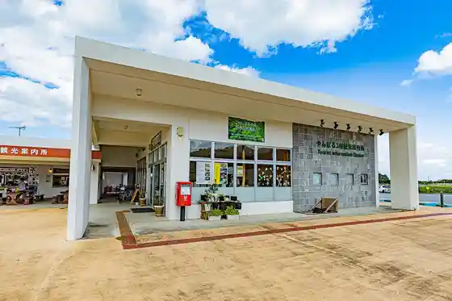
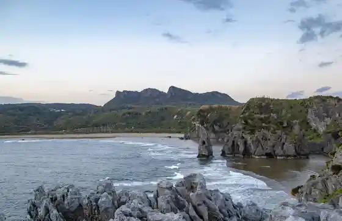

Kunigami Kankyo Kyoiku Center (Yambaru Manabi Forest)
Kunigami, Okinawa · 0980-41-7979 · Official / source link
Kunigami Forest Park
Kunigami, Okinawa · 0980-43-0514 · Official / source link

Yonaha Gaku 9 Gome Made no Kosu
Kunigami, Okinawa · 0980-41-2420 · Official / source link

Yambaru 3 Mura Tourist Information
Kunigami, Okinawa · 0980-41-2420 · Official / source link

Asumuihaikusu (Kyu Oishi Rinsan)
Kunigami, Okinawa · 0980-41-8117 · Official / source link

Okuma Beach
Kunigami, Okinawa · 0980-41-2222 · Official / source link
Yambarukuina Seitai Tenji Gakushu Shisetsu Kuina Forest
Kunigami, Okinawa · 0980-41-7788 · Official / source link
Yambarukuina Lookout
Kunigami, Okinawa · 0980-43-0977 · Official / source link
Yambaru no Mori Neichagaido Tour
Kunigami, Okinawa · Official / source link
Roadside Station Yambaru Painappuru no Oka Aha
Kunigami, Okinawa · 0980-43-5115 · Official / source link
Asumuihaikusu Suton Museum (Okinawa Ishi no Bunka Museum)
Kunigami, Okinawa · 0980-41-8117 · Official / source link
Hen no Ki Dam
Kunigami, Okinawa · Official / source link
Teichiami Ryo Experience (OSC& Kunigami Gyogyo Kyodokumiai)
Kunigami, Okinawa · 0980-51-4100 · Official / source link
Yambaru Mori no Omocha Art Museum
Kunigami, Okinawa · 0980-50-1022 · Official / source link
Yambaru Higashikaigan Buru Tsurizumu Kyoten Shisetsu
Kunigami, Okinawa · 0980-51-4100 · Official / source link
Nanmei Mori Shitsu
Kunigami, Okinawa · 050-8884-4992 · Official / source link
Se Kasa Saki Lighthouse
Kunigami, Okinawa · Official / source link